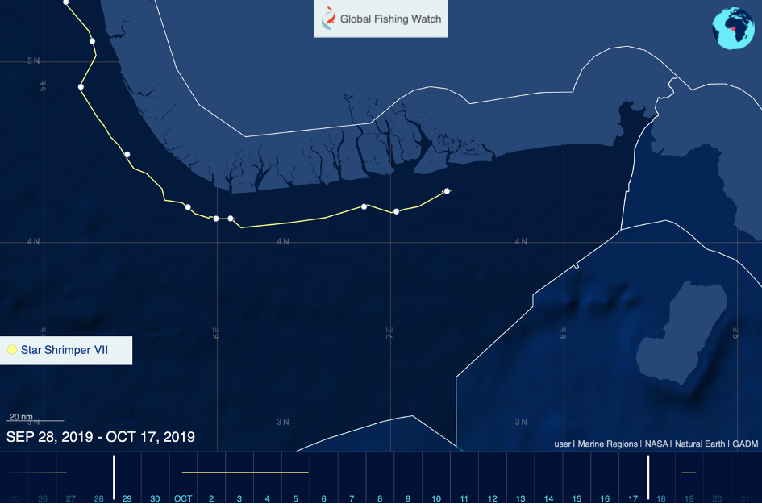

Captain Kazi was one of the oldest and most experienced captains in the Atlantic Shrimpers fleet. For over 30 years, he worked for the Namibian company that prides itself as the largest fishing company in West Africa. Kazi, says his colleague Samuel A.*, helped build that company.
But then Kazi gets arrested. In March 2017, with the support of Sea Shepherd activists, Liberian authorities boarded his ship and took the crew into custody. The charge: fishing illegally in Liberian waters, a serious offense under Liberian fishery law.
The case received attention, not only in Liberia but also in Europe. The reason: Atlantic Shrimpers, the company Kazi sailed for, is owned by Dutch fishing giant Cornelis Vrolijk.
In an interview with the Dutch publication Follow the Money, the Vrolijk manager responsible for Atlantic Shrimpers blames the captain of the vessel and says his actions clearly violate company policy. He threatens disciplinary action, saying "we really don't want these kinds of nasty problems."
Indeed, the company later announced it had fired Captain Kazi and his Chief Engineer.
Kazi, in his sixties, decides to not look for a new job. He retires and moves back to his family in Ghana. This marks the end of an over 30-year-long career as a fisherman, a career without any disciplinary incidences—up until the end.
What the Vrolijk manager portrays as an isolated incident caused by a rogue individual, however, is not isolated. It is common practice. Our investigation came across a large number of incidences involving Cornelis Vrolijk and its subsidiaries, painting a very different picture of the family-owned company.
Cornelis Vrolijk
Cornelis Vrolijk is one of the largest fishing companies in Europe. The Ijmuiden-based conglomerate generates more than EUR 400 million in yearly revenue and operates a fleet of nearly a hundred vessels worldwide. Most of its visible activity takes place in Europe, especially in the Channel and around the British Isles. Much less, however, is known about Vrolijk's activities in Africa.
Yet, of the three big Dutch fishing companies, Cornelis Vrolijk is likely the one with the biggest foothold on the continent, says journalist Bram Brugger, who investigated the Dutch fishing giants for years. Not only does the company fish intensively in African waters—most of the fish it catches worldwide is also sold there.
A prime example of this presence is Atlantic Shrimpers, founded in Nigeria in the 1980s through the merger of three smaller fishing companies. Over the years, it has grown to a fleet of more than 70 vessels. Today, the company is fully owned by Cornelis Vrolijk. Another Vrolijk subsidiary, Primstar B.V., serves as the sole marketer of the shrimp and fish caught by Atlantic Shrimpers.
While Cornelis Vrolijk presents itself as a family business, its corporate structure is remarkably complex. A 2018 EU report found the holding to consist of around 100 interconnected companies, many spread across different countries—making it challenging to assess the full scope of its operations in Africa.
Fishing in illegal waters
Samuel A.* has worked as a captain for Atlantic Shrimpers for 14 years. When we reach him by phone in Nigeria, he is on rest leave after a long deployment at sea. Crews typically spend up to 80 days on board, working in shifts around the clock. Their rest time—about 30 to 40 days—is scattered throughout the year.
Samuel says he enjoys the work, but he takes issue with how the company handled the case of Captain Kazi. He disputes the official version of events, in which Kazi acted independently and against company policy. According to Samuel, the practice of crossing into neighboring waters to meet fishing quotas is common—though rarely acknowledged.
He describes a system in which the company sets catch targets for each vessel, and falling short can result in disciplinary action. If the targets are not met repeatedly, he says, captains risk being dismissed. This creates a dilemma: "To reach the [company's] target, we sometimes have to take a risk and go to another country. They [the captains] do that on their own—and not everybody, but some of them," Samuel explains.
It is a difficult choice, he says: “You can get fired for going out of the territory. Or you get fired for not meeting the targets.”
In Kazi's case, Samuel believes the pressure to meet those targets played a key role. The Star Shrimper XXV was registered in Ivory Coast, where, he says, Kazi struggled to catch enough fish. “So, he has to sneak into Liberia. And he was caught.”
Samuel insists that Atlantic Shrimpers is aware of such practices. He emphasizes that Kazi's case is not an isolated incident—what is isolated is the fact that he got caught. "We are not independent," he says. "They control us. They have monitors on each vessel to know our movements."
This account differs notably from the public statements made by Cornelis Vrolijk on the issue. But it aligns with other patterns we observed. Analyzing publicly available vessel tracking data on Global Fishing Watch, we found that Star Shrimper vessels frequently deactivate their AIS—a required transponder for transmitting a vessel's position, identity, and other data—while fishing near territorial boundaries.

Star Shrimper VII depicted fishing in Nigerian coastal waters in 2019 close to EEZ borders. The vessel eventually deactivated its AIS. Source: GlobalFishingWatch
Cornelis Vrolijk is not only active in Nigeria. Other key fishing grounds for the company in Africa include Mauritania, Western Sahara, and Namibia. In Namibia, concerns about the company's practices have also come to light.
Vrolijk's foothold in Namibia
In July 2020, Namibian fisheries observer Rauna Mhata appeared before the Magistrates Court in Swakopmund. She had filed allegations against the crew of the Cornelis Vrolijk Fzn, a Namibian-flagged freezer trawler owned at the time by Cornelis Vrolijk.
According to Mhata, the crew had dumped large quantities of dead fish overboard while she was on board as an official observer—an act that is illegal under Namibian fisheries law. She also initially accused them of intimidation and assault.
Mhata arrived at the hearing with only a family member for support. Across the courtroom sat the Dutch captain, chief officer, and fishing master—joined by multiple lawyers and supporters.
The charge of assault and intimidation was later withdrawn by the prosecution, and the dumping case was ultimately dismissed. A second fisheries observer was also on board at the time, but according to Mhata, he was below deck when the dumping occurred and did not witness it. Without corroboration, it was Mhata's word against that of the crew.
Namibian journalist Ester Mbathera, who covered the hearing, says she has no doubt Mhata was telling the truth. She points to a wider pattern: observers frequently face pressure and isolation when reporting violations. “You could sense the intimidation,” she says, recalling the atmosphere in court.
After the trial, Mbathera attempted to speak with Mhata, but she declined. “They're not very keen on speaking,” she says. “We really don't know what else happens on the water.”
We experienced the same. Our own attempts to contact Rauna Mhata were unsuccessful.
The vessel at the center of the case—the Cornelis Vrolijk Fzn—was owned by Cornelis Vrolijk at the time. Unlike in Mauritania, where the company has built entire processing factories, its presence in Namibia has depended more on local partnerships to secure access and political influence—particularly over fishing quotas. Chief among these partners are Alex and George Kirov, known locally as the Kirov brothers.
Local partnerships under scrutiny
Originally from Bulgaria, the Kirov Brothers have lived in Namibia for over thirty years. They built their success in the fishing sector and now control a vast array of companies. According to journalist Ester Mbathera, who has reported on them extensively, they dominate the market for selling Namibian horse mackerel to the Democratic Republic of Congo—where around 90 percent of the catch is exported.
For Cornelis Vrolijk, the Kirovs have been ideal local partners. They bring existing infrastructure and strong political ties. Alex Kirov, the younger of the two, holds a seat on the Namibian Marine Resource Advisory Council, a body that helps determine how fishing quotas are distributed. Mbathera says past generous quota allocations to companies linked to the brothers raise concerns about conflicts of interest.
Locally, the Kirovs' presence is viewed with suspicion. “Everybody in town, when you speak to them about the Kirov brothers, they will tell you to be very careful,” Mbathera says. “They think the Bulgarians are Mafia, they are dangerous people.”
We found no independent evidence that points towards the Kirovs being dangerous. But public records and reporting tie the Kirovs to several controversial dealings. Their companies supplied crew to the Cornelis Vrolijk Fzn when it was accused of illegal dumping and intimidation. Their names also appear in the leaked documents that led to the Fishrot scandal, which exposed widespread corruption in Namibia's fisheries sector. According to Mbathera, George Kirov eventually left the country for the Canary Islands amid scrutiny from Namibian authorities. Alex Kirov remained.
The business relationship between Cornelis Vrolijk and the Kirovs stretches back several years. In 2015, Vrolijk sold its trawler Scombrus to them. Although the deal was publicly attributed to “Russian owners,” vessel registration records list 'Scombrus Fishing Pty' as the new owner—a company directed by Alex Kirov. The vessel now operates under the name Mediva Star.
In 2021, Cornelis Vrolijk sold the Cornelis Vrolijk Fzn—the vessel involved in the Namibian court case—to the Kirovs. A 2020 investigation by journalist Bram Logger revealed that Vrolijk had used a shell company in Namibia to enable the vessel to access fishing quotas reserved for Namibian-owned ships. Whether Logger's reporting or the court case influenced the decision to sell remains unclear. Nevertheless, the transfer enabled the Kirovs to expand the number of companies through which they can legally obtain quotas—a strategic move amid mounting scrutiny of quota distribution practices.
We contacted the Cornelis Vrolijk manager who oversaw the sale, asking whether any connection remains between the company and the vessel—or with the Kirov brothers themselves. We received no response. The same month the sale occurred, company records show the manager was removed as director of North Atlantic Fishing Holdings, Vrolijk's UK-based arm that held the Namibian shell company. He had served in that position for six years.
Secrecy is part of the business
This secrecy is common. None of the representatives of Cornelis Vrolijk or its subsidiaries we reached out to were willing to speak with us. According to Pavel Klinckhamer, a Greenpeace activist with close knowledge of the Dutch fishing giants, this is not surprising—it reflects the nature of the business. What happens at sea, stays at sea. "And that gives opportunity to do bad stuff," Pavel says. In practice, this means violations often escape both scrutiny and sanction.
In this field, much depends on individuals involved in the operations to come forward. In the Fishrot scandal, it was the Icelandic manager Johannes Stefansson who took that step. In this investigation, it was Atlantic Shrimper captain Samuel A.* who made clear that Captain Kazi's illegal fishing in Liberian waters was not an isolated incident—and that the company was aware and allowed it to continue.
Samuel, too, is thinking of quitting. He wants to start his own company. With his 14 years of experience, he believes he is ready to take the helm himself: "It's everybody's dream and everybody's prayer. To have his own company. I have been working under a company for years, and if I have the opportunity to start my own company, I will take it." Atlantic Shrimpers, he says, will support that. "We are friends."